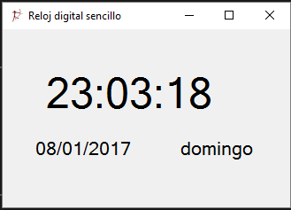

Sencillo programa para la inserción de un reloj digital en cualquiera de nuestras aplicaciones.
El ToString(String) método devuelve la representación de cadena de un valor de fecha y hora en un formato específico que usa las convenciones de formato de la referencia cultural actual; para obtener más información, consulte CultureInfo.CurrentCulture.
El format parámetro debe contener un carácter especificador de formato único (vea Cadenas con formato de fecha y hora estándar) o un modelo de formato personalizado (vea Cadenas con formato de fecha y hora personalizado) que define el formato de la cadena devuelta. Si format es null o una cadena vacía, el especificador de formato general "G", se utiliza.
Algunos usos de este método son:
Cómo obtener una cadena que muestra la fecha y hora en formato de hora y fecha corta de la referencia cultural actual. Para ello, utilice el especificador de formato "G".
Cómo obtener una cadena que contiene el mes y el año. Para ello, utilice la cadena de formato "MM/aaaa". La cadena de formato utiliza el separador de fecha de la referencia cultural actual.
Cómo obtener una cadena que contiene la fecha y hora en un formato concreto. Por ejemplo, el "MM/dd/yyyyHH:mm" cadena de formato muestra la cadena de fecha y hora en un formato fijo como "19 2013 / / 03 / / 18:06". Utiliza la cadena de formato "/" como un separador de fecha fija, independientemente de la configuración específica de la referencia cultural.
Obtención de una fecha en un formato comprimido podría usarse para serializar una cadena de fecha. Por ejemplo, la cadena de formato "AAAAMMDD" muestra un año de cuatro dígitos seguido por un mes de dos dígitos y un día de dos dígitos sin separador de fecha.
https://msdn.microsoft.com/es-es/library/zdtaw1bw(v=vs.110).aspx

using System; using System.Collections.Generic; using System.ComponentModel; using System.Data; using System.Drawing; using System.Linq; using System.Text; using System.Threading.Tasks; using System.Windows.Forms; namespace Reloj_digital_I { public partial class Form1 : Form { public Form1() { InitializeComponent(); } private void Form1_Load(object sender, EventArgs e) { } private void timer1_Tick(object sender, EventArgs e) { label1.Text = DateTime.Now.ToLongTimeString(); label2.Text = DateTime.Now.ToShortDateString(); label3.Text = DateTime.Now.ToString("dddd"); } } }
using System; using System.Collections.Generic; using System.ComponentModel; using System.Data; using System.Drawing; using System.Linq; using System.Text; using System.Threading.Tasks; using System.Windows.Forms; namespace Reloj_digital_I { public partial class Form1 : Form { public Form1() { InitializeComponent(); } private void Form1_Load(object sender, EventArgs e) { } private void timer1_Tick(object sender, EventArgs e) { label1.Text = DateTime.Now.ToLongTimeString(); label2.Text = DateTime.Now.ToShortDateString(); label3.Text = DateTime.Now.ToString("dddd"); } } }
For more information on X, see ...?